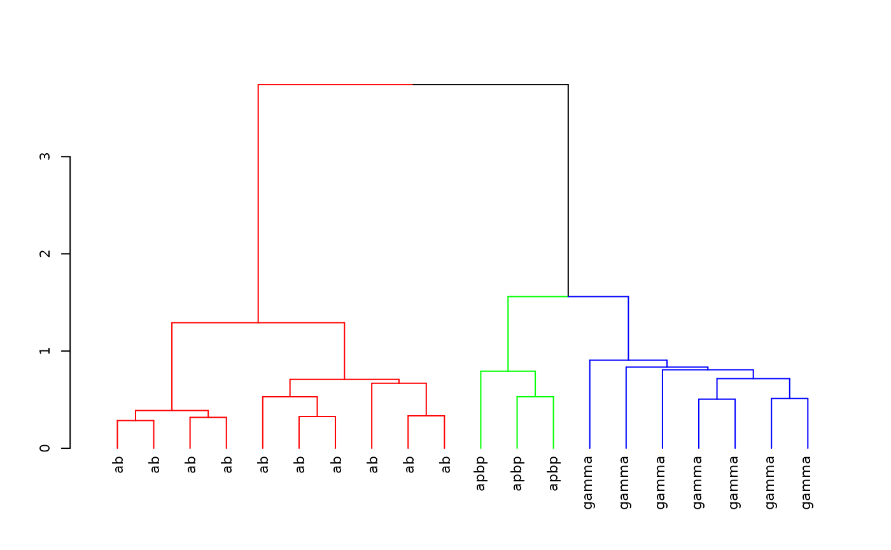

NBLAST Clustering
Gregory Jefferis
2025-08-18
Source:vignettes/NBLAST-Clustering.Rmd
NBLAST-Clustering.RmdStartup
Install the package if required
install.packages('nat.nblast', dependencies = TRUE)Load the package and set up for knitr / 3D snapshot figures
## Warning in rgl.init(initValue, onlyNULL): RGL: unable to open X11 display## Warning: 'rgl.init' failed, will use the null device.
## See '?rgl.useNULL' for ways to avoid this warning.
rgl::setupKnitr()Clustering with NBLAST scores
All by all scores
First we create a 20 x 20 NBLAST all by all score matrix for 20 Kenyon cells included with the nat package
library(nat)
kcscores <- nblast_allbyall(kcs20)Clustering
Hierarchically cluster the Kenyon scores and divide the clustering into 3 groups
hckcs <- nhclust(scoremat=kcscores)## The "ward" method has been renamed to "ward.D"; note new "ward.D2"
library(dendroextras)
dkcs <- colour_clusters(hckcs, k=3)Plot a dendrogram of the clustering, with leaves labelled by true neuron type
